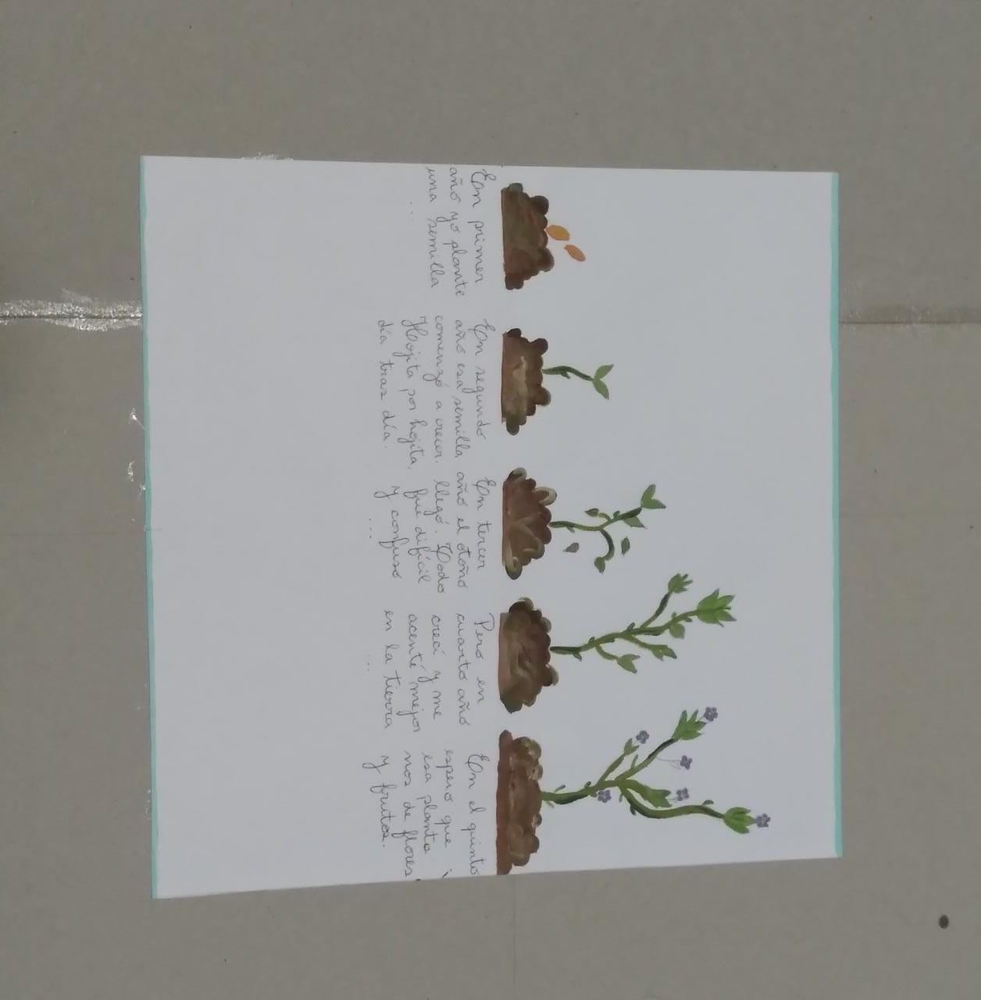

Elena Martinez

"En primer año plante una semilla.
En segundo año esa semilla comenzó a crecer. Hojita por hojita, día tras día.
En tercer año el otoño llegó. Todo fue difícil y confuso...
Pero en cuarto año crecí y me asenté mejor en la tierra.
En el quinto espero que esa planta nos de flores y frutas."